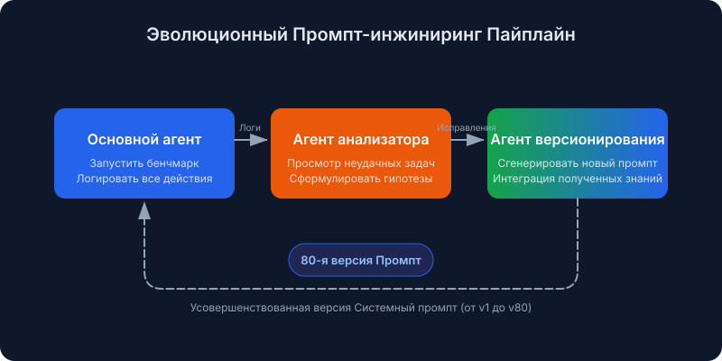
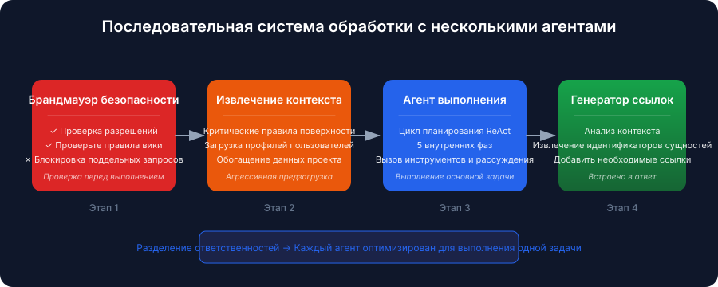
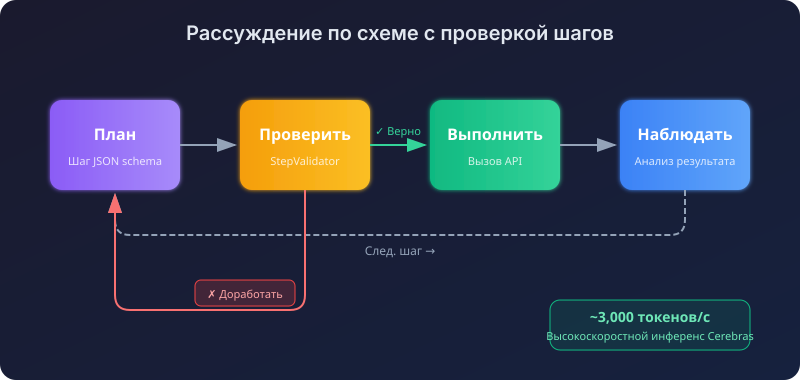
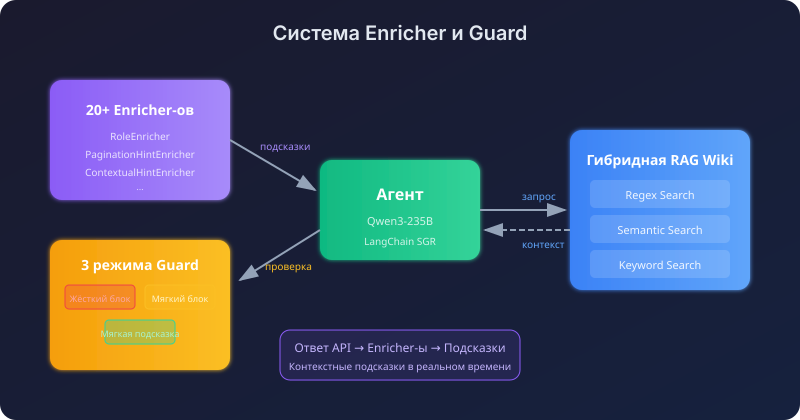
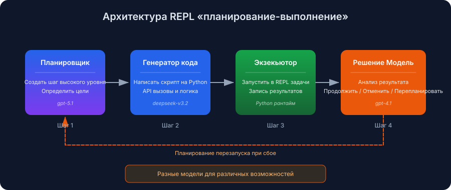
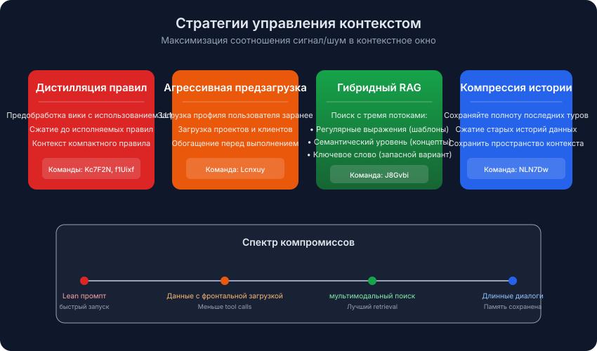
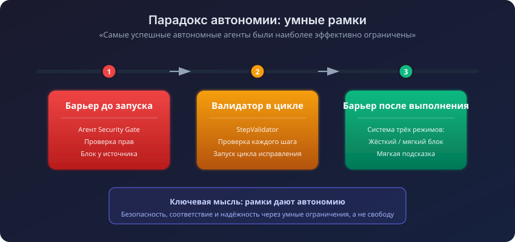

Автоматический перевод
Эта статья была автоматически переведена с оригинальной английской версии.
Конкурс Enterprise RAG Challenge 3 (ECR3): Архитектуры успешных ИИ-агентов
Конкурс Enterprise RAG Challenge 3 (ECR3) только что завершился. В нём приняли участие 524 команды, было выполнено более 341 000 запусков агентов, и лишь 0,4% команд добились идеального результата. Теперь, когда таблица лидеров и отчёты стали общедоступными, я изучил победные решения, чтобы выяснить, чем отличались лучшие команды.
В этой статье рассказывается, что такое ECR3, как выглядели задания, и какие закономерности я постоянно наблюдал в архитектурах, которые сработали эффективно.
Кратко: многоподразделенческие пайплайны превосходят монолитные. Лучшая команда применяла методы эволюционного проектирования промптов в ходе более 80 автоматизированных итераций. Победители уделили значительное внимание механизмам контроля (предварительным проверкам безопасности, валидаторам во время выполнения, защитным мерам после завершения) и стратегии формирования контекста. Важнее всего было качество информации, включаемой в контекст, а не её объем. крупномасштабный исследовательский проект с участием большого количества пользователей этот тест определяет, как автономные ИИ-агенты справляются со сложными бизнес-задачами. В отличие от статических критериев оценки, ECR3 работает в рамках Agentic Enterprise Simulation (AGES) — симуляции дискретных событий, предоставляющей доступ к реалистичный корпоративный API### Почему важен ECR3
Благодаря механизму AGES агенты работают внутри симулированной компании, которая включает в себя:
- Профили сотрудников с конкретными навыками и отделами
- Проекты с распределением задач по командам и связями с клиентами
- Корпоративную вики с бизнес-правилами и иерархиями прав доступа
- Систему отслеживания времени и финансовые операции
Каждая задача запускает собственную симуляцию с новыми данными, поэтому агенты не могут запоминать ничего между запусками.
Показатель сложности таблица лидеров слишком строгий:
| Метрика | Значение |
|---|---|
| Зарегистрированные команды | 524 |
| Общее количество запусков агента | 341,000+ |
| Доступные задачи | 103 уникальных бизнес-задачи |
| Идеальный балл (100,0) | Только 0,4% команд |
| Оценка ≥ 0.9 | Только 1,1% команд |
Типы задач
Эти задачи охватывают несколько областей навыков:
- Мультихоповое рассуждение: сопоставление навыков сотрудников с заданиями в проектах
- Проверка разрешений: предотвращение несанкционированных изменений заработной платы или доступа к данным
- Неоднозначные запросы: обработка многоязычных и перефразированных запросов пользователей
- Строгое соблюдение требований к выводу: в ответах обязательно должны присутствовать ссылки на соответствующие сущности
Что на самом деле победило
Четыре шаблона продолжали появляться в верхней части табло лидеров:
- Многоагентные пайплайны превосходят монолитных агентов. Разделение задач оказалось эффективнее, чем попытка одного крупного агента справиться со всем самостоятельно.
- Самые автономные агенты были наиболее ограничены. Механизмы контроля не реализовывались в последний момент.
- Автоматизированная эволюция промптов превосходит ручную разработку. Лучшие промпты проходили более 80 поколений оптимизации.
- Стратегия работы с контекстом выполняла основную работу. Важен не объём контекста, а его правильность.
Лучшие победившие подходы
Пять представленных ниже архитектур следуют совершенно разным направлениям — от полностью автоматизированной эволюции промптов до гибридных методов поиска информации. Каждая из них содержит элементы, которые стоит заимствовать.
1. Эволюционная инженерия промптов (Команда VZS9FL / @aostrikov)
Эта метод с наивыским баллом оценки Автоматизированная разработка промптов с использованием цикла самосовершенствования.

Вместо ручной настройки промптов команда разработала цикл из трёх агентов, который позволяет агенту учиться на собственных ошибках.
Пайплайн из трёх агентов:
| Агент | Роль |
|---|---|
| Основной агент | Запускает тестирование на производительность, фиксирует все действия и сбои |
| Агент анализатора | Проводит анализ неудачных задач и формулирует гипотезы относительно корневых причин. |
| Агент версионирования | Генерирует новую версию промпта с учетом полученных знаний. |
Результат: Использованным в производстве был промпт 80-я автоматически сгенерированная версия. Каждая версия устраняла конкретный паттерн сбоев, обнаруженный в логах предыдущей сессии выполнения. Большинство из этих случаев относились к тем крайним ситуациям, которые можно заметить лишь после часового анализа записей о сбое.
Стек вызовов: claude-opus-4.5 с Python SDK от Anthropic и использование нативных инструментов.
2. Последовательная пайплайн-система с несколькими агентами (Team Lcnxuy / @andrey_aiweapps)
В этом подходе отказались от монолитного агента в пользу последовательной пайплайн-системы из специалистов, каждый из которых достаточно прост в реализации, чтобы эффективно справляться со своей задачей.

Четырехэтапная пайплайн-система:
- Агент брандмауэра безопасности: проверка перед выполнением, которая верифицирует наличие разрешений согласно правилам вики до запуска основного цикла.
- Агент извлечения контекста: извлекает ключевые правила из объемных запросов и заранее загружает данные пользователя, проекта и клиента.
- Агент выполнения: планирование в стиле ReAct с 5 внутренними этапами (Идентификация → Обнаружение угроз → Сбор информации → Проверка доступа → Выполнение).
- LinkGeneratorAgent: встроенный в инструмент генерации ответов агент, который анализирует контекст для включения необходимых ссылок на сущности.
Самым интересным элементом является агент LinkGenerator. Он решил одну из проблем... наиболее распространённые моды отказа: агент, который даёт правильный ответ, но забывает обязательные ссылки на источники.
Стек: atomic-agents и instructor frameworkы, основанные на моделях gpt-5.1-codex-max, gpt-4.1 и claude-sonnet-4.5.
3. Расчеты с использованием схемы и проверка шагов (Команда NLN7Dw / Илия Рис)
Эта команда объединила метод SGR с очень быстрым выводом результатов и реальным временем проверкой корректности. Суть подхода заключалась в том, что множество быстрых и проверенных решений лучше, чем один медленный, тщательно обдуманный ответ.

Ключевые компоненты:
| Компонент | Функция |
|---|---|
| StepValidator | Проверяется каждый предложенный шаг. Если что-то не так, он возвращается на доработку вместе с комментариями. |
| Управление контекстом | Полный план с предыдущего хода, плюс сжатая история более ранних ходов |
| Динамическое обогащение данных | Автоматически загружает профиль пользователя, проекты и клиентов; фильтры на основе больших языковых моделей позволяют включать только данные, релевантные конкретной задаче |
| Контейнеры автоматической пагинации | Все конечные точки списка автоматически возвращают полные результаты. |
Преимущество в скорости обусловлено работой на Cerebras при скорости примерно 3 000 токенов в секунду. При такой скорости агент может позволить себе пересмотреть какой-либо шаг, вместо того чтобы давать медленный первоначальный ответ от более мощной модели.
Стек: gpt-oss-120b на Cerebras, с использованием настроенной реализации SGR NextStep.
4. Система обогащения данных и защиты (команда J8Gvbi / @mishka)
В этой реализации к основе SGR были добавлены неблокирующие «интеллектуальные подсказки» и иерархическая система защиты. По мере возврата ответов от API-сервисов модули обогащения анализируют их и тихо указывают агенту, на что следует обратить внимание.

Система обогащения данных:
Более чем 20 модулей обогащения данных Проверил ответы API и внедрил контекстуальные подсказки:
RoleEnricher: "You are LEAD of this project, proceed with update."
PaginationHintEnricher: "next_offset=5 means MORE results! MUST paginate."
Система защиты с тремя режимами:
| Режим | Поведение |
|---|---|
| Жёсткий блок | Действия, выполнение которых невозможно, заблокированы навсегда |
| Мягкий блок | Опасные действия блокируются при первой попытке, но разрешаются при повторной попытке. |
| Мягкое подсказывание | Руководство без блокировки |
Гибридная вики RAG: три потока поиска (регулярные выражения, семантический поиск, поиск по ключевым словам), работающих параллельно, при этом для каждого типа запроса выбирается наилучший результат.
Стек: qwen/qwen3-235b-a22b-2507 на LangChain Фреймворк SGR.
5. REPL для планирования и выполнения (Ключевая концепция команды: параллелизм)
В этой архитектуре устанавливается строгая граница между этапами планирования и выполнения, причём используется цикл генерации кода. По сути, это REPL: агент планирует следующий шаг, генерирует соответствующий код, запускает его и определяет дальнейшие действия.

Разные модели для разных задач: планировщик отвечает за планирование, модель генерации кода пишет код на Python, а более простая модель принятия решений определяет дальнейшие действия после каждого шага.
Настройка мультимодельной архитектуры:
| Этап | Модель |
|---|---|
| Планирование | openai/gpt-5.1 |
| Генерация кода | deepseek/deepseek-v3.2 |
| Решение после выполнения шага | openai/gpt-4.1 |
| Окончательный ответ | openai/gpt-4.1 |
REPL для завершения шагов:
- Планировщик создаёт шаг высокого уровня.
- Модель генерации кода пишет для него скрипт на Python.
- Скрипт выполняется в изолированном контексте.
- Модель принятия решений анализирует полученный результат и выбирает один из вариантов: продолжить, прервать или перепланировать.
Путь перепланирования — именно здесь данная концепция демонстрирует свою эффективность. Когда какой-либо шаг выполняется частично с ошибкой, модель принятия решений может переписать оставшуюся часть плана вместо того, чтобы продолжить работу по уже повреждённой версии.
Паттерны, встречавшиеся повсюду
Помимо отдельных архитектур, в практически всех лучших решениях присутствовали определённые общие принципы.
Управление контекстом выполнило основную часть работы
Лидирующие команды поняли, что качество контекста определяет верхний предел производительности агента.

| Стратегия | Подход | Лучше всего подходит для |
|---|---|---|
| Дистилляция правил | Предобрабатывать вики с помощью ЯИИ ~320 токенов — краткое резюме | Краткие промпты, быстрая загрузка |
| Агрессивная предзагрузка | Загрузить данные пользователя/проекта/клиента перед выполнением | Минимизация вызовов инструментов |
| Гибридный RAG | Стримы поиска с использованием регулярных выражений, семантического анализа и ключевых слов | Сложные требования к поиску данных |
| Компрессия истории | Сохраняйте полные последние сообщения, сжимая более старую историю | Длительные разговоры |
Компромисс: Команды Kc7F2N и f1Uixf Было установлено, что качество контекста важнее его объёма. Формула f1Uixf показала, что сжатие истории негативно сказывается на производительности, поэтому они решили сохранять полную историю и опираться на модели с большим объёмом контекста.

| Тип ограждения | Когда | Пример |
|---|---|---|
| Шлюзы перед выполнением | Перед началом основного цикла | Агент брандмауэра безопасности проверяет разрешения с учётом правил вики. |
| Валидаторы внутри цикла | Во время процесса рассуждения | StepValidator проверяет каждое предложенное действие и инициирует повторную обработку в случае наличия ошибок. |
| Защитные механизмы после выполнения | Перед окончательной отправкой | Система защиты трёхрежимной работой проверяет полноту ответа |
Обертки для умных инструментов
Лучшие команды создали слои абстракции поверх необработанного API:
- Автоматическая пагинация: Вспомогательные компоненты проходят по каждой странице и возвращают полный набор данных.
- Фаззи-нормализация: «Готовность к путешествиям» переводится как
will_travelПоле API. - Специализированные инструменты рассуждения:
think,plan, иcriticИнструменты для управляемого обсуждения.
Распространённые моди при сбоях и способы их устранения победителями
Даже лучшие агенты имели одинаковые слепые зоны. Решения были структурного характера, а не просто корректировками промптов:
| Режим сбоя | Описание | Исправление архитектурных проблем |
|---|---|---|
| Обход разрешений | Выполнение ограниченных действий без проверки прав пользователей | Агент брандмауэра безопасности перед выполнением; обязательная последовательность: идентификация → разрешения → выполнение |
| Отсутствующие ссылки на сущности | Правильный текстовый ответ, однако в нем отсутствуют необходимые ссылки на источники. | Embedded LinkGeneratorAgent в инструменте ответов |
| Исчерпание страницирования | Обработка происходит только для первой страницы результатов списка | Обёртки для автоматической пагинации для всех конечных точек списка |
| Циклы вызова инструментов | Постоянно застреваю из-за необходимости вызова одного и того же инструмента с незначительными изменениями. | Параметры ограничений; модели, ориентированные на логические рассуждения (Qwen3) |
| Перегрузка контекста | Заполнение контекста нерелевантными разделами вики | Очистка правил; динамическая фильтрация контекста |
Что взять с собой
Если вы разрабатываете агентов и хотите применить это:
- Используйте многоагентные пайплайны. Монолитные агенты устарели. Лучшие команды привлекали от 3 до 5 специалистов для обеспечения безопасности, извлечения контекста, планирования и выполнения задач.
- Автоматизируйте итерации запросов. Оптимальный вариант запроса — это его версия номер 80. С помощью циклов можно выявить паттерны сбоев, которые невозможно заметить вручную.
- Уделяйте должное внимание механизмам контроля. Используйте предварительные проверки безопасности, встроенные механизмы критики в процессе работы и защитные меры после выполнения. Агенты, казавшиеся наиболее автономными, на самом деле находились под строгим контролем.
- Оборачивайте свои инструменты в оболочки. Функции пагинации, обогащения данных и нечеткого сравнения должны реализовываться через специальные оболочки. Одна команда создала более 20 таких обогатителей, которые в реальном времени анализировали ответы API.
- Серьезно относитесь к стратегии работы с контекстом. Применяйте методы дистилляции правил (суммаризация в объеме около 320 токенов), предзагрузку данных и динамическую фильтрацию. Скорость также играет важную роль. Одна команда достигла скорости обработки около 3 000 токенов в секунду, что позволяло ей часто перепланировать действия.
Основные выводы
- Самые эффективные системы типа ECR3 рассматривали подход RAG как часть рабочего процесса агента, а не как один лишь запрос к источникам информации.
- Успешные решения разделяли этапы анализа, редактирования и верификации на отдельные, четко определенные шаги.
- Память и итерации запросов имели большое значение, поскольку агенты улучшали качество результатов с каждой попыткой.
- Соблюдение строгих стандартов оценки определяло разницу между впечатляющими демонстрациями и надежным автономным поведением.